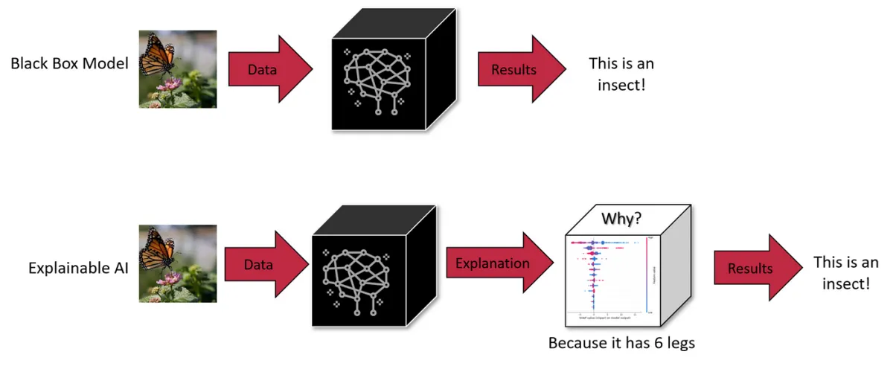
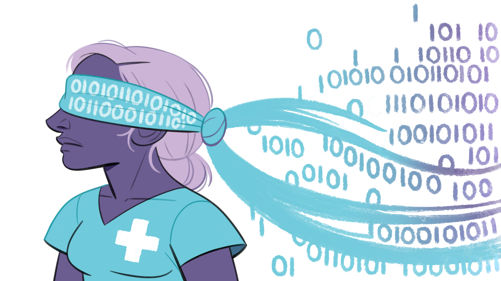

8 Sesgos y Limitaciones
A menudo les digo a mis estudiantes que no se dejen engañar por el nombre “inteligencia artificial”; no hay nada artificial en ello. La IA es hecha por humanos, diseñada para comportarse por humanos y, en última instancia, para impactar la vida y la sociedad humana. - Fei Li
El Sesgo en los Datos y la Metodología de las Redes Neuronales
La IA, especialmente en el campo de la medicina, depende en gran medida de los datos con los que se entrena. Si estos datos están sesgados, los resultados serán inherentemente defectuosos. Por ejemplo, en los estudios médicos es común que las minorías estén subrepresentadas, lo que crea modelos de IA que no generalizan bien a todas las poblaciones. Un claro ejemplo es lo que ocurrió con un algoritmo para el diagnóstico del cáncer de piel, que fue entrenado mayoritariamente con imágenes de personas de piel clara. Al aplicarse a personas con piel oscura, los resultados no fueron precisos, exponiendo así el sesgo en los datos utilizados.
El problema se agrava cuando recordamos que en medicina no solo trabajamos con imágenes bien estructuradas o datos organizados, sino con un vasto volumen de datos no estructurados, como las notas en texto libre de los registros médicos electrónicos. La mayoría de los sistemas de IA actuales requieren aprendizaje supervisado, lo que implica que un humano etiquete los datos para “enseñar” a la IA. Si las etiquetas no son precisas, o si los datos utilizados para entrenar la IA son limitados o incorrectos, el sistema cometerá errores. Por ejemplo, si un algoritmo es entrenado solo con imágenes de alta calidad de un solo tipo de población, su rendimiento se verá drásticamente afectado cuando se enfrente a un paciente que no se ajusta a esos estándares.
Otro ejemplo destacado es el caso de AliveCor, una empresa que desarrolló un dispositivo para medir el potasio a través de electrocardiogramas utilizando IA. Inicialmente, los datos de pacientes hospitalizados excluían a los pacientes con niveles altos de potasio, lo que casi lleva al abandono del proyecto, revelando la importancia de los datos representativos.
8.1 La Caja Negra de la IA
Uno de los mayores retos en el uso de la IA en la medicina es su carácter de “caja negra”. Esto significa que, aunque los algoritmos pueden realizar diagnósticos o recomendaciones, muchas veces ni siquiera los propios creadores del algoritmo pueden explicar cómo llegaron a esas conclusiones. Un ejemplo clásico de este fenómeno es el algoritmo de Deep Patient, desarrollado para predecir enfermedades como la esquizofrenia a partir de registros médicos. Aunque el algoritmo funcionó, los investigadores no pudieron explicar exactamente cómo. En medicina, esto genera una gran preocupación porque los profesionales de la salud necesitan entender y justificar sus decisiones ante los pacientes. Si no podemos explicar cómo un algoritmo tomó una decisión crítica, ¿cómo podemos confiar en él?

8.2 Sesgos y Discriminación en la IA
Cathy O’Neil, en su libro Weapons of Math Destruction, nos recuerda que los algoritmos pueden perpetuar y amplificar los sesgos y prejuicios humanos. En IA médica, esto es particularmente alarmante. Un estudio de 2015 mostró que un algoritmo para predecir complicaciones en pacientes con neumonía recomendaba enviar a pacientes asmáticos a casa, basándose en datos erróneos. El sesgo en la IA no solo se encuentra en los datos, sino también en las decisiones y modelos que creamos. Si estos modelos no son cuidadosamente evaluados y ajustados, podrían exacerbar las desigualdades existentes en la atención médica, afectando más a las minorías y a las poblaciones vulnerables.
8.2.1 Privacidad y Seguridad de los Datos
Otro aspecto esencial es la privacidad de los datos. En 2017, DeepMind, una filial de Google, se asoció con el Servicio Nacional de Salud (NHS) del Reino Unido para desarrollar una aplicación destinada a prevenir lesiones renales. Sin embargo, la empresa accedió a los datos de más de 1.6 millones de pacientes sin obtener el consentimiento adecuado. Este ejemplo pone de relieve el delicado equilibrio entre aprovechar los avances en IA para mejorar la atención médica y proteger la privacidad y los derechos de los pacientes.
Con la IA avanzando a un ritmo acelerado, las preocupaciones sobre la ciberseguridad también se amplifican. Los ataques automatizados y el riesgo de que los algoritmos sean hackeados son amenazas reales, especialmente en entornos médicos donde una falla en el sistema podría poner en peligro la vida de los pacientes.
8.3 Inequidades y Disparidades
 El impacto de la IA en la exacerbación de las inequidades también es una preocupación importante. Por ejemplo, en Estados Unidos, donde la atención médica es un bien altamente estratificado, los avances en IA podrían beneficiar más a las poblaciones que ya tienen acceso a mejores cuidados, ampliando la brecha entre los que tienen y los que no. Esto podría llevar a una situación en la que la IA esté diseñada para optimizar tratamientos solo para aquellos con acceso a servicios premium, dejando de lado a las poblaciones más vulnerables.
8.3.1 Ética en la IA Médica
Finalmente, es fundamental considerar la ética en la implementación de IA en medicina. El uso de algoritmos para decidir quién recibe ciertos tratamientos o qué intervenciones se deben priorizar plantea cuestiones éticas profundas. ¿Quién es responsable cuando una IA toma una decisión equivocada? ¿Cómo podemos asegurarnos de que los algoritmos de IA no reproduzcan o amplifiquen los sesgos sociales y económicos existentes?